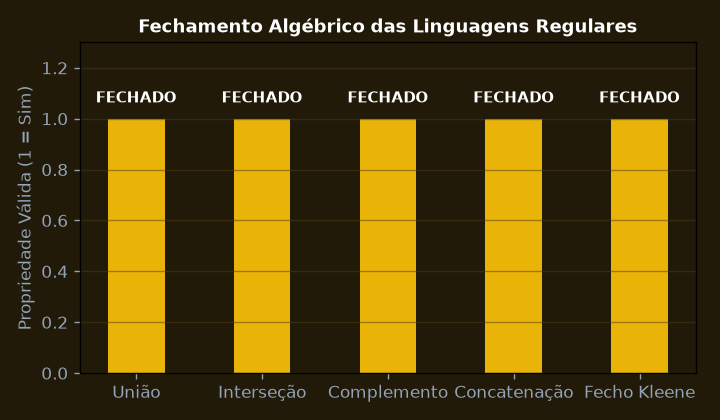
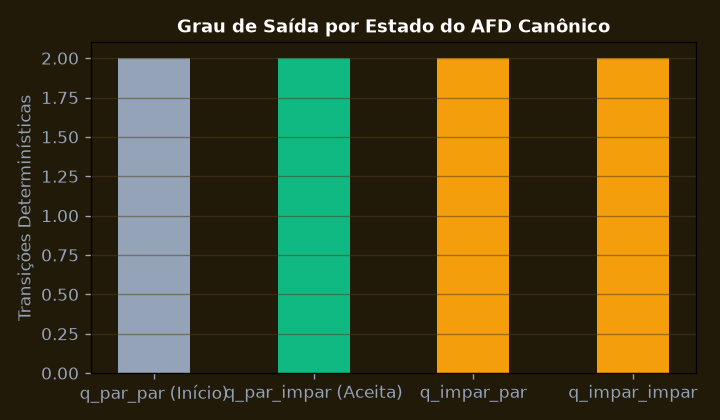
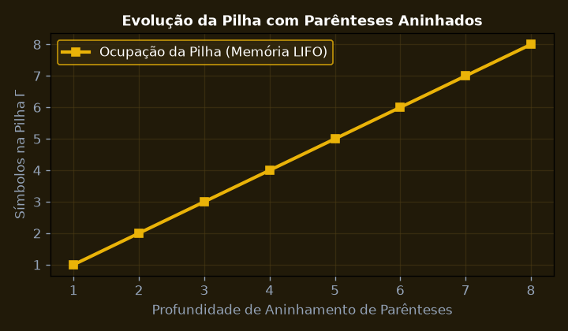
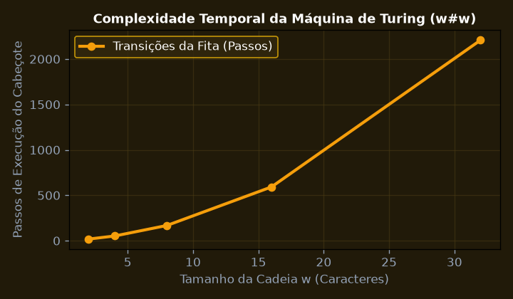
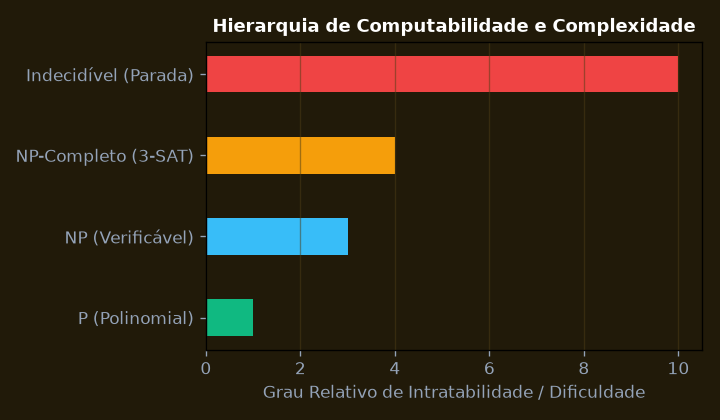

Alfabetos, Cadeias, Linguagens Formais e Operações Algébricas
Demonstrar formalmente as propriedades de fechamento de linguagens regulares sob operações de união, concatenação, fecho de Kleene, interseção e complemento.
💎 Resolução Algébrica Passo a Passo (Padrão Symbolab)
\Sigma = \{0, 1\}; cadeias w \in \Sigma^* com comprimento |w| \ge 0.
Construção com autômato AFN com transições-\epsilon provando que a classe de linguagens regulares é fechada sob união.
Inversão dos estados de aceitação F' = Q \setminus F em AFD determinístico completo.
L_1 \cap L_2 = \overline{\overline{L_1} \cup \overline{L_2}}, provando fechamento sob interseção.
A álgebra de linguagens regulares forma uma álgebra booleana fechada completa.

Autômatos Finitos Determinísticos (AFD) e Minimização de Hopcroft
Construir o AFD M = (Q, Sigma, delta, q0, F) que reconhece cadeias binárias com número par de 0s e número ímpar de 1s e aplicar o algoritmo de minimização de estados de Hopcroft.
💎 Resolução Algébrica Passo a Passo (Padrão Symbolab)
Estados Q = \{q_{par,par}, q_{par,impar}, q_{impar,par}, q_{impar,impar}\} correspondentes às paridades.
Transições com '0' alternam a paridade de zeros; transições com '1' alternam a paridade de uns.
q_0 = q_{par,par}; \quad F = \{q_{par,impar}\}.
Separação inicial em blocos F e Q \setminus F. Nenhum par de estados é indistinguível.
O AFD obtido já é canonicamente mínimo com exatamente 4 estados e zero redundância.

Expressões Regulares e o Lema do Bombeamento para Linguagens Regulares
Utilizar o Lema do Bombeamento (Pumping Lemma) para provar por contradição que a linguagem L = {a^n b^n | n >= 0} não é regular e não pode ser reconhecida por nenhum AFD.
💎 Resolução Algébrica Passo a Passo (Padrão Symbolab)
Supor que L = \{a^n b^n \mid n \ge 0\} é uma linguagem regular com comprimento de bombeamento p.
Selecionar a cadeia w = a^p b^p \in L com comprimento |w| = 2p \ge p.
Como |xy| \le p, a subcadeia y consiste exclusivamente de símbolos 'a' (isto é, y = a^k, onde 1 \le k \le p).
A cadeia bombeada x y^2 z possui p + k símbolos 'a' e apenas p símbolos 'b'.
Como p + k \ne p, x y^2 z \notin L, refutando a hipótese. Logo, L não é regular e exige autômato com pilha.

Gramáticas Livres de Contexto (GLC) e Autômatos com Pilha (AP)
Projetar a Gramática Livre de Contexto em Forma Normal de Chomsky (FNC) e o Autômato com Pilha determinístico para reconhecer expressões aritméticas balanceadas com parênteses.
💎 Resolução Algébrica Passo a Passo (Padrão Symbolab)
S \to S + S \mid S * S \mid (S) \mid a.
Separação em níveis de precedência: E (Expressão/Soma), T (Termo/Multiplicação), F (Fator/Parênteses).
Eliminação de produções-\epsilon, produções unitárias e substituição por produções estritamente binárias.
Empilhamento de '(' ao encontrar abre-parênteses e desempilhamento correspondente em fecha-parênteses ')'.
Aceitação por pilha vazia e estado final garantindo parsing sintático de compiladores em O(N^3).

Máquinas de Turing, Tese de Church-Turing e Linguagens Recursivas
Construir a função de transição de uma Máquina de Turing padrão de fita infinita para reconhecer a linguagem de cópia L = {w#w | w in {0,1}*} e formalizar a Tese de Church-Turing.
💎 Resolução Algébrica Passo a Passo (Padrão Symbolab)
Alfabeto de fita \Gamma = \{0, 1, X, Y, \#, B\} com símbolo em branco B.
O cabeçote lê o primeiro símbolo antes de '#', substitui por X, move à direita até a posição correspondente após '#' e valida.
Retorno à esquerda até o próximo símbolo não marcado.
Quando todos os símbolos à esquerda de '#' forem consumidos, verifica se não restam símbolos residuais à direita.
A máquina atinge o estado de aceitação q_{accept} em O(N^2) passos, confirmando que L é uma linguagem recursiva (decidível).

Decidibilidade, o Problema da Parada de Turing e Classes de Complexidade P vs NP
Demonstrar formalmente por redução e diagonalização de Cantor a indecidibilidade do Problema da Parada (Halting Problem) e situar as classes P, NP, NP-Completo e NP-Difícil.
💎 Resolução Algébrica Passo a Passo (Padrão Symbolab)
Supor que existe máquina de Turing H capaz de decidir se qualquer M para com entrada w.
Construir D que toma a descrição \langle M \rangle como entrada: chama H(\langle M, \langle M \rangle \rangle) e inverte o resultado (entra em loop se H responder Sim; para se H responder Não).
O que acontece com D(\langle D \rangle)? Se D para, H diz que para, logo D entra em loop (Contradição!). Se D entra em loop, H diz que não para, logo D para (Contradição!).
Nenhuma máquina H pode existir. O Problema da Parada é categoricamente indecidível.
Problemas verificáveis em tempo polinomial (NP) vs decidíveis em tempo polinomial (P) com problemas NP-Completos sendo os mais difíceis de NP.
